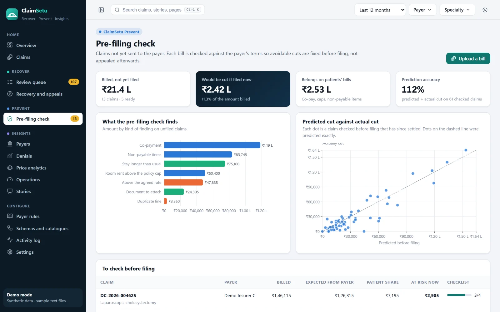
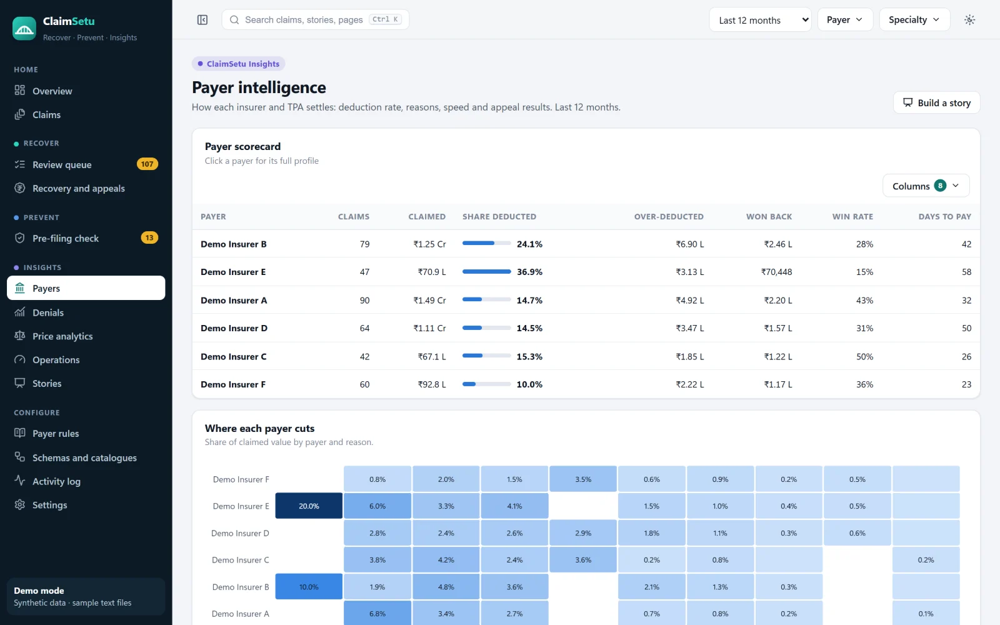

Win back what insurers shouldn't have cut.
ClaimSetu checks every deduction against that payer's own terms, then drafts the appeal with the evidence attached.

Three modules, one finance team
Recover
Audit past deductions, appeal the wrong ones and track each result. Proposed price: a success fee on money won back.
Prevent
Check a bill against the payer's terms before filing, so the cut never happens. Proposed price: per claim.
Insights
Payer scorecards, denial patterns and ready reports for payer meetings. Proposed price: a later subscription.
From closed claim to tracked result
The hospital keeps control. ClaimSetu never submits anything to a payer.
- HospitalShares closed claims, redacted
- ClaimSetu softwareReads letter, bill, summary
- ClaimSetu softwareChecks each cut against the terms
- ReviewerConfirms or corrects finding
- ClaimSetu softwareDrafts appeal with evidence
- HospitalEdits, approves and files it
- ClaimSetu softwareTracks the result
Red outlines are steps only a person can do.
Catch it before filing
The checklist predicts likely cuts and names the missing document or rate while there is still time to fix it.

Know how each payer behaves
Compare over-deduction, reasons and settlement speed before the next tariff discussion.

What a pilot would look like
Proposed format. Pricing has not been tested yet.
You share 50 closed claims
Redacted by your team, with the matching payer terms, under a signed data agreement.
You get a deduction audit
Every cut marked within terms, over-deducted or unclear, with rupee totals and evidence.
You decide what to appeal
Your team edits, approves and files. The audit itself is free.
Contact opens soon.
We are setting up a company address. Until then, please try the demo and read how it works.